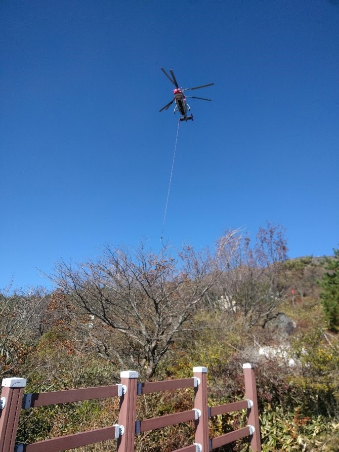
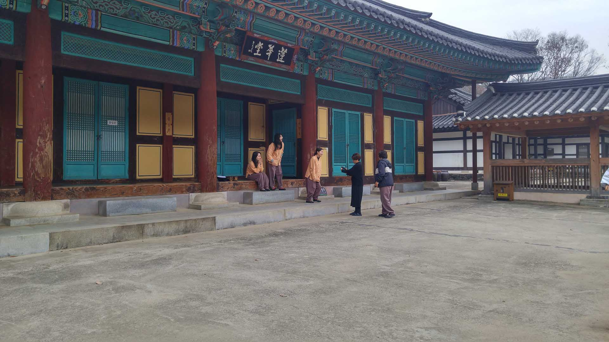
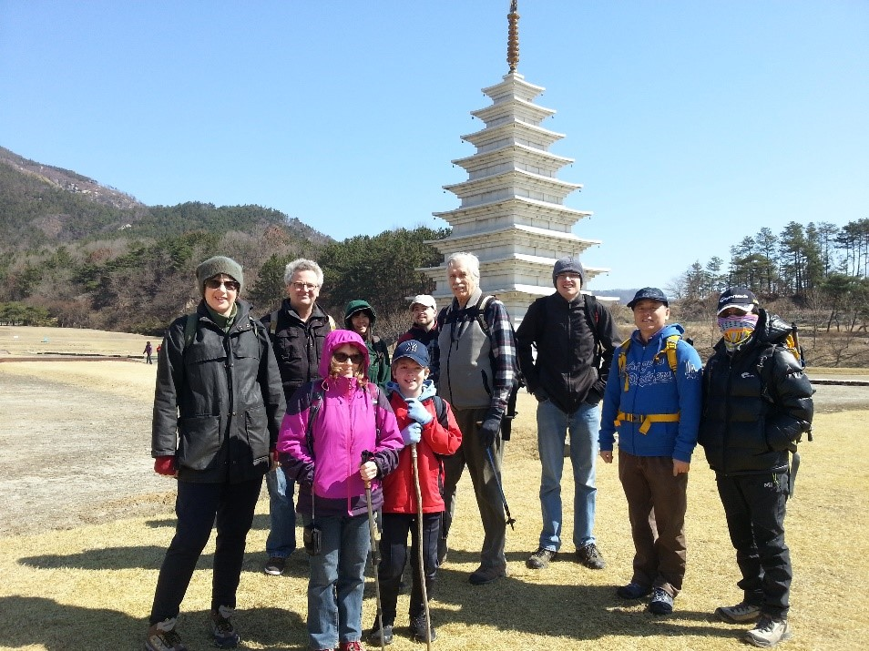
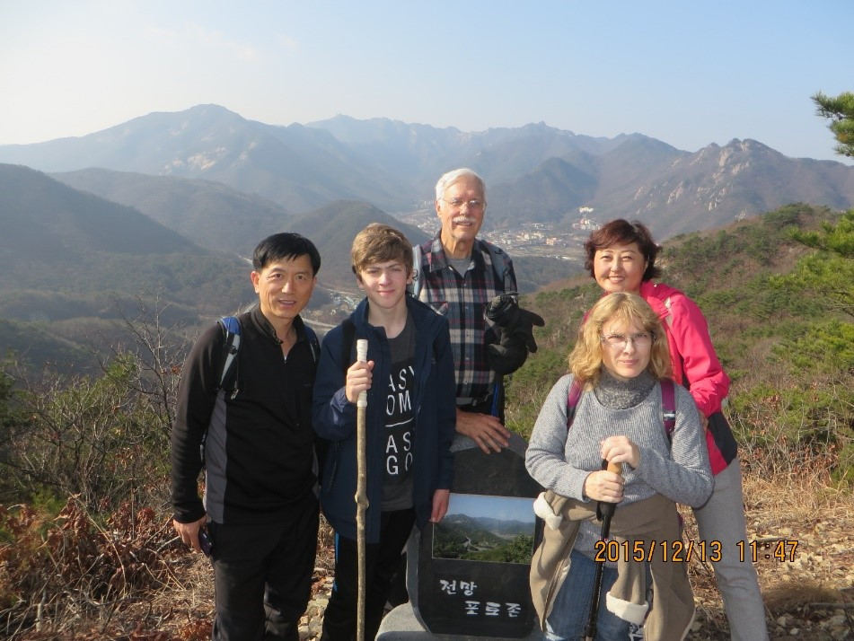

Word about the hiking trails of South Korea

I view Korea as a great hiking country. Almost everyone in Korea has hiked in the mountains at one time
in their life. The middle and high schools often have hikes into the mountains in the spring. Also,
companies have the tradition of employees going to the mountains as part of their celebration of an
accomplishment or as a way of bonding with fellow employees. One reason for this is that the mountains
are always nearby. Another reason is that the love of nature is very much a part of the people’s
philosophy. Seldom will you be up in the mountains without seeing hikers on the trail and often they are
in groups. (Group photo on the right of the Daejeon hikers’ group).
That is true in the hot days of summer and the cold days of winter. Many of the trails have been built
over thousands of years. They do not have the trail markers on the trees as many countries mark their
trails but usually at the beginning of the trail there is a large sign with a map indicating all the
mountain trails specific to that mountain range. This is well worth photographing with your hand phone
or camera should you become lost during your hike. Also, if you have a hand phone, turn on the tracking
app. This is a handy way to follow your location and anticipate the trail intersections ahead. Most of
the trails are so obvious that they do not need to be referred to. Also, the trail itself exhibits the
signs of having been created over a long period of time. Thousands of years before America was
discovered by Columbus, people were hiking in the mountains of Korea. There are large rocks that have
been obviously moved to make steps and, in some places, there are steps that have been carved into the
rock faces (this includes names carved centuries ago using Chinese letters). When you see this, you feel
that the people of Korea have become part of the land. Where the trails intersect there is almost always
a sign directing you to the correct path to take. This is indicated by the name of the next peak or the
direction down to the beginning of the trail, including the distance to the listed feature.
Forest fires

Always in Korea forest fires are a great danger (photo of no smoking sign). Most rainfall occurs during the summer monsoon
season that starts in June and ends in August. The rest of the year there is very little rain and the forests become very
parched and prone to fire. This is the reason that there are signs along the trail warning about fires. You are not allowed
to build fires in the forests and smoking is not allowed. I have seen the result of fires and it is devastating. Whole areas
have been burnt over with no trees surviving. I have also seen forest fires in the distance and they are very difficult to
fight as most of the mountains are not approachable by vehicles. Fires are fought using specially equipped helicopters that
carry large containers of water. These helicopters from a continuous drop of water (or other substances?) onto the fire. It
is a dangerous procedure as they must come in close to the location of the fire, often between mountain peaks or deep in a
valley. So it is best to never have an open flame while hiking it the Korean forests.
Items Seen along the Trail for safety and emergencies

There are many items that you will observe along the trails that have and do not have counterparts in the
West. One interesting item is the post with numbers that are used to give your location in longitude and
latitude to a rescue helicopter or rescue team. The number to remember is 119. This is the equivalent to
911 in the US and, as in the US, it is not to be used except during a bonfire emergency. I have seen its
use in the mountains and observed a helicopter come and rescue a man who lost the feeling in his legs
during a hike on DogyuSan (덕유산). I was impressed with the quick response of the helicopter to the rescue
scene. Also, I observed the response to a forest fire while on a bike hike along one of the Daejeon bike
paths. Within ten minutes the fire trucks had arrived and were soon pumping water on the fire and within
five minutes more it was extinguished. In this case a road was near where the fire had started.
Location signs
This is an example of two of these location signs. The one on the left provides the emergency number to
call and the coordinates of the location 9519 9987 and the words Da Ba with the Korean language
equivalent. The one on the right gives the position number in Korean for the location and has a beacon
light to aid in a rescue. In this case you might need help from a Korean in giving the location to the
emergency responders. But this type of older sign is rare and most of the signs have the information
also written in English. Should you need help to translate these Korean signs you can use your phone if
you have data and internet signal to translate to English. Amazingly there is internet signal from every
corner of Korea even hiking trails.
First aid
Another item you will observe on the trails is the first aid box on the trail. These are not as common
as the above signs, but they are located along the trail in specified locations. Here is an example of
one I recently observed. Note that this one has a red light that can be turned on at night.
Unfortunately, all instructions are in Korean language but I am sure that if you wait a while a hiker
will come along and aid you in opening it. Otherwise you can try to force it open if you are in a truly
dangerous situation. Since medical help could be a long time coming you will also find bi-lingual signs
showing how to do basic CPR techniques together with the trail map.
Getting Lost
The other situation that happens is you become lost. I have had this happen a few times and my advice it
to stay on the trail, do not panic and wait for a fellow hiker to come along to assist you. The common
thing I have had happen is I came to a trail junction and do not know or remember which trail to take.
The problem is increased as you may not know what the sign says. In the past when hiking and I know that
I will be coming back to the junction, I put down a stick that indicated which way to go on the return
part of the hike and photographed it for future reference. Seldom are you many miles from a road. Also,
there are many public bus routes so look for a bus stop. Do not hesitate to ask other hikers for
directions. I am always amazed at how willing Koreans are to help when it is needed and their skill in a
foreign language, including English.
Places to stay in the mountains

Many of the highest mountains of Korea have shelters where you can stay. Most of these require you to
sign up for lodging and they are extremely inexpensive and usually have food available along with hot
water. The taller mountains that come to mind are SeoRakSan (설악산) and JiRiSan (지리산). These are not fancy
and do not rate for many stars, but they are utilitarian and well stocked, including a bathroom, to help
you have a good night’s sleep. At the same time realize that Koreans are very early risers as they love
to observe the sunrise. They often arise at four in the morning so they are on the top of the mountain
in time to watch the sun rise over the East Sea when staying at the one on SeoRakSan (설악산) on the east
coast. Another place to stay is the Buddhist Mountain temples. Again, you must make arrangements before
arriving and note the Buddhists are all up at the crack of dawn, usually before four in the morning.
Also, they expect you to be in bed by ten and do not tolerate noise. Also, the Buddhist temples are a
more expensive place to stay but the lodging provided is very nice with a single room. Also, the sexes
are usually segregated.
Our Facebook page

To find out more information about current activities of the Daejeon hikers please click on the Facebook link below which
will take you to the Daejeon hikers Facebook page where upcoming hikes are announced and photos of recent hikes are posted
regularly. If you are interested to join us on a hike, first join the Daejeon hiker’s Facebook group, then request to be put
on our email list to receive announcements of hikes. We usually hike about twice a month, either Saturday or Sunday usually
beginning at 10 a.m. at Kaist front gate parking lot in Daejeon. If possible, it is preferable to announce your attendance
in advance to either Jong Moo or George (which you can do by responding to email or on facebook) so we can plan car sharing.
If you don’t have a car yourself we suggest to give a small contribution towards the cost of gas to the driver at the end of
the hike. If a hike is planned to a mountain in a National park there is usually a small admission fee, otherwise there are
no costs. Children that are able to walk 4-6 hours on their own are welcome….should be no problem for most children from the
age of 8.
What to bring

Recommendations on what to bring: suitable footwear and clothing for hiking, packed lunch and snacks, walking stick, tissue,
water, phone (in case we lose you and to take pictures too) and dependent on weather: rainwear, sunhat, sunscreen, small mat
to sit on, in winter some crampons for your shoes and most importantly a sense of adventure.